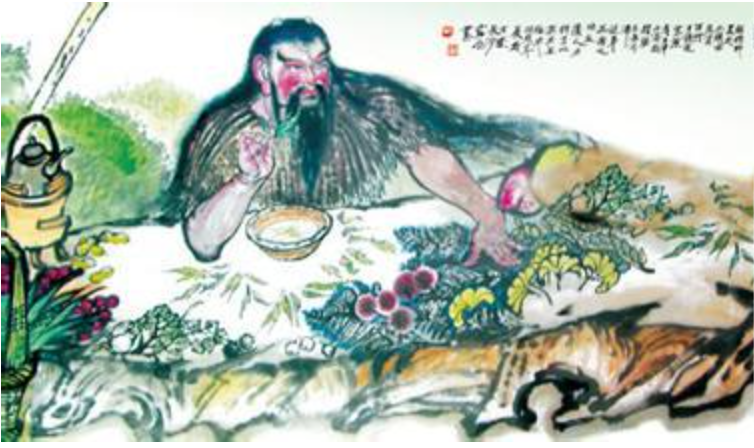

神农不倦尝百草，因缘际会得遇茶

神农尝百草的传说与茶的发现 神农，也就是远古三皇之一的炎帝，相传在公元前2700多年以前的神农时代。神农为了给人治病，经常到深山野岭去采集草药， 他不仅要走很多路，而且还要对采集的草药亲口尝试，体会、鉴别草药的功能。
有一天，神农在采药中尝到了一种有毒的草，顿时感到口干舌麻，头晕目眩，他赶紧找一棵大树背靠着坐下，闭目休息。这时， 一阵风吹来，树上落下几片绿油油的带着清香的叶子，神农随后拣了两片放在嘴里咀嚼，没想到一股清香油然而生，顿时感觉 舌底生津，精神振奋，刚才的不适一扫而空。他感到好奇怪，于是，再拾起几片叶子细细观察，他发现这种树叶的叶形、叶脉、 叶缘均与一般的树木不同。神农便采集了一些带回去细细研究。后来，就把它命名为'茶'。
唐．陆羽《茶经》：“茶之为饮，发乎神农氏。”，在中国的文化发展史上，往往是把一切与农业、与植物相关的事物起源最终 都归结于神农氏。
而中国饮茶起源于神农的说法也因民间传说而衍生出不同的观点。有人认为茶是神农在野外以釜锅煮水时，刚好有几片叶子飘进 锅中，煮好的水，其色微黄，喝入口中生津止渴、提神醒脑，以神农过去尝百草的经验，判断它是一种药而发现的，这是有关中 国饮茶起源最普遍的说法。